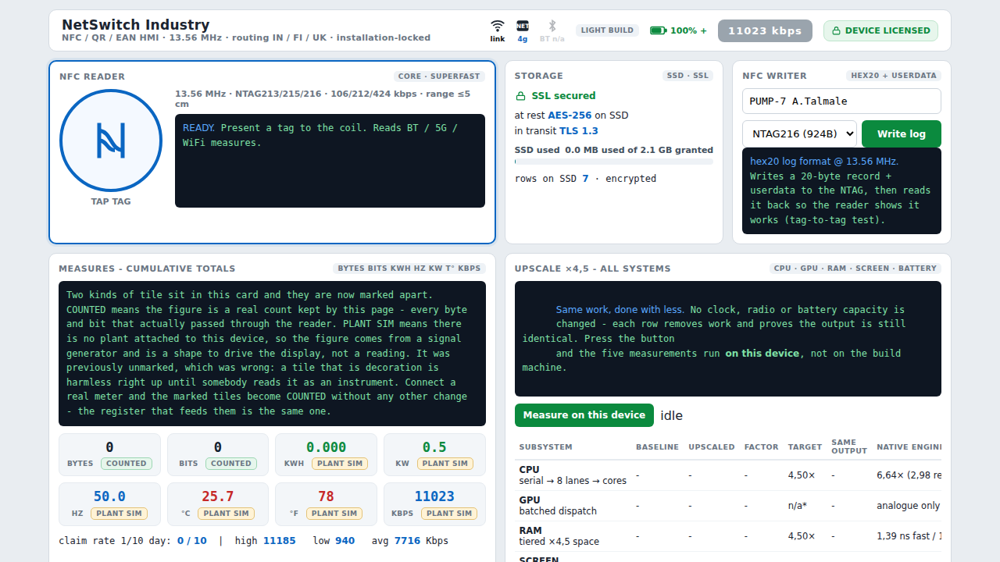
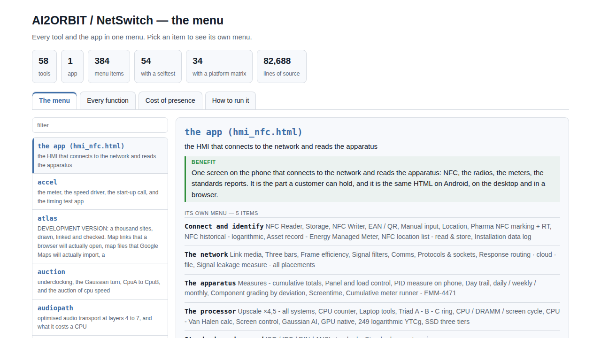
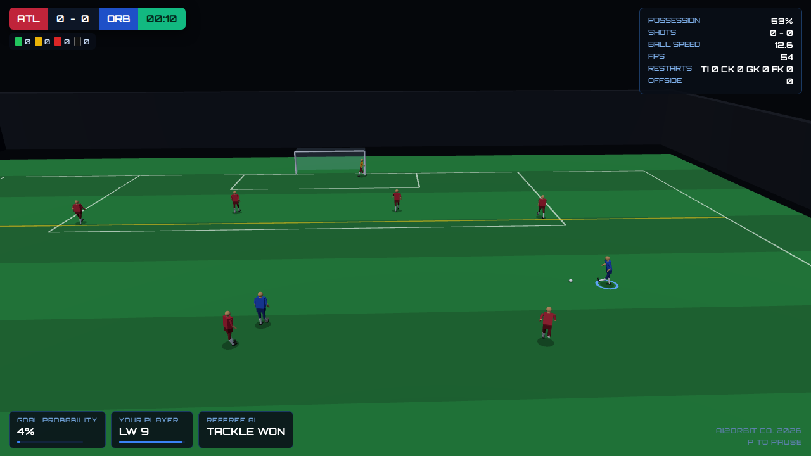

Every figure on these screens says where it came from - measured on this device, supplied by a datasheet, modelled, or not stated at all. A number with no provenance beside it is the ordinary way a monitoring product misleads the person reading it, and it is the one thing none of this does.
One screen that connects to the network and reads the apparatus. NFC and QR at 13.56 MHz, the radios, the meters and the standards reports, on a phone in a plant room or on a desktop in an office. The same HTML runs on Android, on iOS and in a browser.
The tiles are marked. COUNTED means a real count kept by the page - every byte that passed through the reader. PLANT SIM means no plant is attached and the figure is driving the display rather than reporting anything. A tile that is decoration is harmless until somebody reads it as an instrument, so the two are never allowed to look alike.

The HMI sits on top of a set of command line tools, each of which answers one question with arithmetic and says plainly what it did not measure. They build on Linux, Windows and Android from a single source file each, with no libraries to install.
Most of them check themselves. Several are then checked again from outside, by a second program in a second language, so that a suite and the code it tests do not share one author's assumptions.

Whether traffic fits on a bus is arithmetic, not opinion. The fieldbus tool answers it for PROFIBUS DP and PROFINET, and starts from a distinction that decides the whole question: the layers a PROFIBUS diagram marks not used are not idle, they are absent. There is no code, no octet on the wire and no share of the bus period set aside for them. There is nothing there to switch on.
layer PROFIBUS DP PROFINET -------------------------------------------------------------- 7 application DP-V0/V1/V2 CBA, RT, records 6 presentation absent absent 5 session absent absent 4 transport absent TCP and UDP 3 network absent IPv4 2 data link FDL, token 802.3 MAC, VLAN 1 physical RS485 or MBP 100BASE-TX or FX --------------------------------------------------------------
A stack with no network layer cannot route, so no frame takes a longer path than expected. With no transport layer it cannot segment or retransmit out of band, so no frame arrives late because of an earlier one. What is left is a bus whose worst case period is arithmetic - and that property is the reason the protocol exists.
PROFINET is a different answer entirely: Ethernet with a full IP stack already in service. Its real time frames carry ethertype 0x8892 and no IP header, precisely so they never queue behind that stack. Two kinds of traffic share one cable and touch none of the same code.
Ten outfield players a side plus keepers, all articulated, all driven by the engine. The referee is live and plays the Laws: offside with the whole flag decision, throw ins, corners, goal kicks, free kicks with a wall the referee waits for, penalties, advantage and dropped balls.
The rules are a separate module with no renderer in it, and they are tested with no browser present. That is what makes them survive a change of engine - the drawing can be replaced without touching a single Law.
